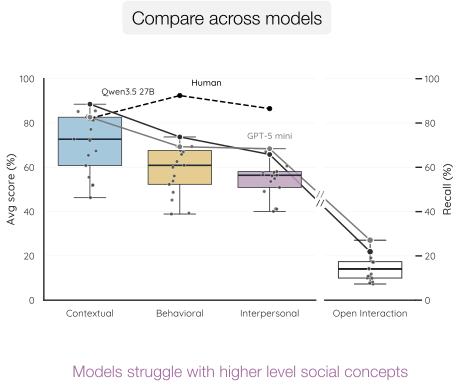
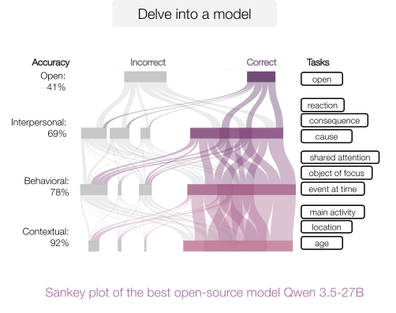

Before Words, Beyond Speech:
Evaluating Nonverbal Social Reasoning in Early Childhood
Lauren Klein, Nick Haber, Philip Fisher, Serena Yeung-Levy
Long before humans can speak, we communicate through gaze, gesture, and touch. Yet this preverbal domain remains a blind spot in modern video understanding. We introduce NEST the first benchmark for measuring video VLMs on nonverbal social reasoning in naturalistic early-childhood videos.


Contributions
-
1
The NEST (Naturalistic Early-childhood Social inTeractions) benchmark: The first child-centric dataset for nonverbal social reasoning in close, naturalistic interactions.
-
2
A compositional schema and evaluation: A hierarchical schema over three reasoning levels (contextual, behavioral, interpersonal) plus an open description of interactions, that disentangles basic perception from higher-order social reasoning, revealing a stark performance collapse in state-of-the-art VLMs.
-
3
A comprehensive evaluation of VLM failure modes: We characterize the gaps and test their practical implications for early-childhood interventions.
How to structure nonverbal social interactions?
We propose to decompose each interaction into a hierarchy of progressive levels of social reasoning: contextual, behavioral, interpersonal, and an open-ended description that integrates all of these cues. NEST's dense annotation (12.5 questions per clip) allows evaluation similarly to how child development codes interactions, by disaggregating complex concepts instead of relying on a global accuracy score.
The NEST schema
Explore the benchmark
Pick a clip and see how its questions build up the four levels of reasoning.
Benchmark results highlights
With NEST we can analyze results across models or delve into a single model. Models reliably identify contextual attributes but, in contrast to humans, performance collapses as tasks shift towards more complex social reasoning.


Models are effective finding the object of attention but struggle with temporal grounding as events become shorter.
Separating the initiator-responder for interpersonal reasoning, we find that child-child and adult-adult interactions perform worse than mixed interactions.
Specialist models (e.g. gaze estimation) perform on par or better than VLMs depending on the task, making them preferable based on resources.
Leaderboard
How vision–language models and humans compare across the NEST hierarchy.
| # | Model | Size | Contextual | Behavioral | Interpersonal | All | Open sim | Open rec. |
|---|
Click a column to sort · ranked by All (mean of the three multiple-choice levels) · Open scored separately (similarity 0–3, recall) · best per column in bold
Citation
@inproceedings{huynh2026nest,
title = {Before Words, Beyond Speech: Evaluating Nonverbal Social Reasoning in Early Childhood},
author = {Huynh, Marie Amale* and Bravo-S\'anchez, Laura* and Klein, Lauren and
Haber, Nick and Fisher, Philip and Yeung-Levy, Serena},
booktitle = {Arxiv},
year = {2026},
}